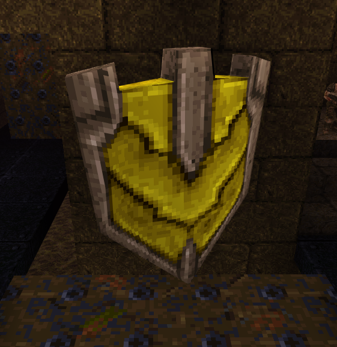
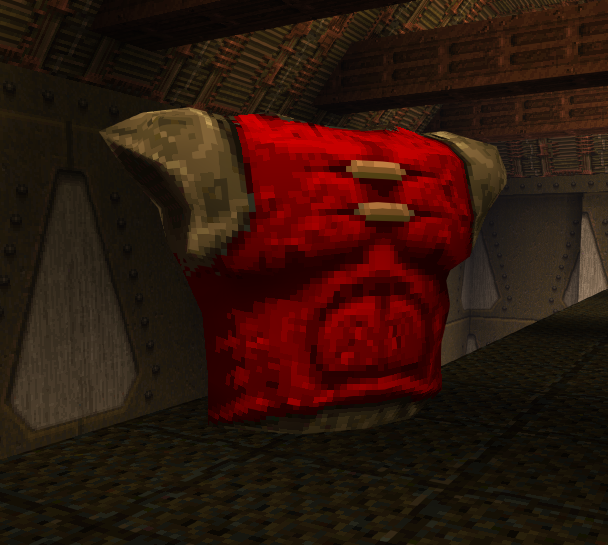
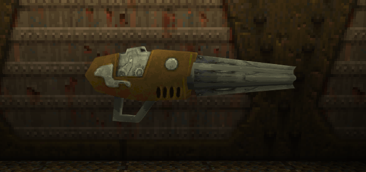
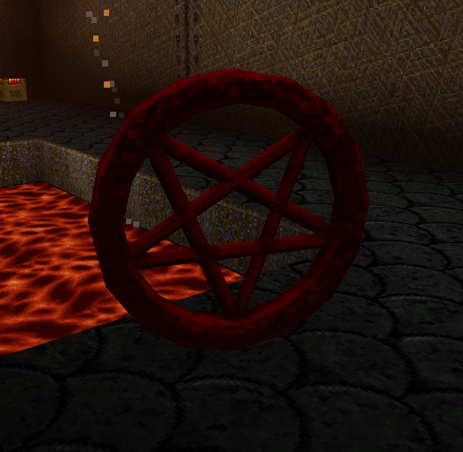

Items
New Items
Armor Shard |
Light Armor |
Heavy Armor
Time Shard |
Special Health
Heavy Machine Gun |
Railgun
Changed Items
Weapons and Ammo |
Powerups
Quad Damage |
Pentagram of Protection |
Megahealth
New Items
Armor
Armor has been reworked. There are no longer different classes of armor with different levels of protection. Instead we follow the Quake Champions ruleset.
Armor Shard

Restores 5 points of armor. Can raise armor up to 75 points above maximum. Only drops from other Champions and certain enemies. Disappears after a period of time.
Light Armor

Restores up to 50 points of armor. Replaces all Green and Yellow Armors.
Heavy Armor

Restores 100 points of armor. Can raise armor up to 75 points above maximum. The Heavy Armor now respawns every 30 seconds. Replaces all Red Armors.
Time Shard

Reduces remaining Active Ability cooldown by 6 seconds. Replaces all Rotten Health Kits.
Special Health

Restores 25 points of health. Can raise health above maximum, up to 175 total points. Respawns every 15 seconds.
Found in Horde Mode and in the map Crucible.
Heavy Machine Gun

Rapid fire hitscan weapon. Gives 100 bullets if below, otherwise just gives 10.
Replaces all Nailgun pickups, with the Nailgun becoming a starting weapon.
Railgun

High damage hitscan sniping weapon. Fills uranium slugs to the maximum of 10.
All of the base game multiplayer maps now have support for the Railgun, so long as they possess at least 2 Rocket Launchers. If so, one of the Rocket Launchers will be replaced.
The original campaign now features one Railgun in each Episode.
Changed Items
Weapons and Ammo
Weapons now respawn after 1 second in Deathmatch. If the server's "deathmatch" variable is set to 2, the server will use a "Duel" ruleset, causing weapons to respawn after 5 seconds. Ammo boxes now respawn after 20 seconds across all Deathmatch modes.
Picking up weapons that have a maximum ammo of 150 will either fill the ammo to 100 or add 10 ammo if meeting that threshold. Picking up weapons that have a maximum ammo of 25 will either fill the ammo to 10 or add 1 ammo if meeting that threshold.
Bullets, nails, and cells add either 50 or 25 ammo. Shells, bolts, rockets, and slugs add either 10 or 5 ammo.
See the Weapons chapter for changes made to weapons.
Powerups
Powerups now take 90 seconds to spawn in Multiplayer, then 120 seconds to respawn.
Quad Damage

Quad Damage will now respawn as a Pentagram after being collected if a certain spawnflag is set.
Pentagram of Protection

The Pentagram no longer grants invincibility. Instead it grants an additional 67% damage reduction.
The effect stacks with the damage reduction from armor and abilities.
The Pentagram will also now respawn as a Quad Damage after being collected if a certain spawnflag is set.
Megahealth

Still restores 100 points of health, but now can only raise health 75 points above maximum. The Megahealth now respawns every 30 seconds.